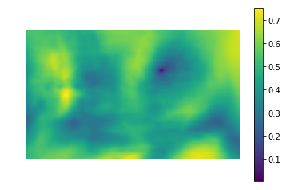
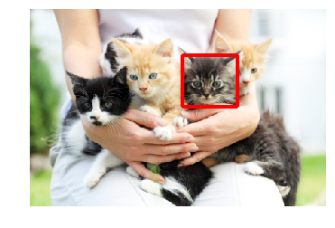

Приходилось ли вам когда-нибудь долго вспоминать название объекта, который вы
видите на фото? Или может быть вы часто имеете дело с необычными объектами, о которых хотели бы
узнать больше. Но не знаете, как он называется. Наша команда использовала специальный алгоритм,
который умеет определять находящиеся на фото объекты, выделяя и подписывая их.
В алгоритме задействована большая база различных библиотек, помогающих сделать алгоритм определения
более правильным и точным. Разберем подробнее этот алгоритм.
Начнем с малого. Попробуем найти ранее заготовленный шаблон на фото. Возьмем фотографию с изображением одного котенка и найдем его среди остальных.
Здесь, левая картинка специальное значение, где есть схожесть шаблона с положением на картинке. Черная точка в ней это указатель на место, где схожесть шаблона с картинкой проявляется больше всего. На правой картинке это место выделено красным прямоугольником.
 Но разве мы будем искать объекты на фото по шаблону? Здесь разобрана лишь небольшая часть работы алгоритма. Дальше мы убрали ограничения на посик шаблонов и дали ему "свободу воли". Благодаря подключенным библиотекам, алгоритм умеет распознавать очень много различных объектов. Когда он находит свопадение объекта на фото с тем, что у него есть в базе, он отмечает его и подписывает, чтобы нам было легче разобраться.
Приведем финальный результат работы алгоритма. Мы взяли фотографию с различными объектами на фото, чтобы проверить работу нашего алгоритма.
Как мы видим, алгоритм не смог определить все объекты. Один остался вне поля его зрения. Именно поэтому мы и дальше будем работать над нашим алгоритмом, чтобы он работал как можно точнее и качественнее.